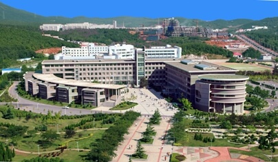
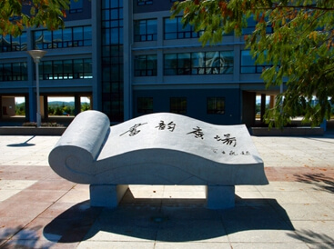
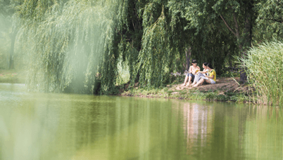

大连理工大学软件学院成立于2001年，是全国重点大学―大连理工大学直属学院之一，也是经国家教育部和国家计委联合批准成立的首批国家级示范性软件学院之一。学院坐落在中国首家服务外包示范基地城市－大连市的经济技术开发区，拥有独立的现代化校园，校区占地78万平方米，建筑面积15万平方米。目前，学院设有软件工程系、网络工程系、嵌入式系统工程系、服务科学与工程系和数字媒体技术系。
经过几年的迅速发展，现已具备了相当的规模和实力。目前拥有一支以中青年教师为骨干、专兼职相结合的高水平教师队伍，共有专兼职教师180余人。学院以引进和培养为着力点，通过校聘和院聘方式，教师队伍中专任教师已达到98人，专业教师队伍学历层次较高，具有博士学位的人数比例为84%，远远高出学校具有博士学位人数比例的平均值，为学院后续发展打下基础和积攒后发优势。由于学院是以培养工程应用型软件人才为 目的，要求教师成为高水平工程研究型人员，而大部分教师来校之前缺乏工程实践经历；为此，学院下大力气加强师资培训，让专业教师进企业，接受企业洗礼和实 践磨练，最后带着攻关项目回到学校，实现“完美转身”；同时，为强化外语教学，派出外语教师出国进修提高教学水平。
由于引进CMU、SAP等国际知名教学系统，促进了软件工程教学和双语教学；通过加强实验室建设、特色专业远程教学建设和搭建科研公共资源平台，丰富了教学资源、开阔了学生视野、提升了学生动手实践能力、为学生自主学习创造了良好条件。
目前，软件学院有全日制本科生、硕士研究生、博士研究生等培养层次。截止2014年4月，共有在籍学生5468人，其中全日制本科生2993人。
学院从2002年至今共招收培养各类学生15000余人，毕业生平均就业率高于97%，工程硕士（全日制）就业率达98.5%以上。学院不断与国内外知名企业建立广泛联系，利用产学研合作和经常走访企业进行交流的契机，了解行业需求，开拓就业市场，培养适销对路的软件人才，实现毕业生高质量、高层次、高效率就业。软院与企业的战略合作关系要求企业接收80%在企业实习的学生就业，为毕业生搭建了充分的实践平台、提供了丰富的就业资源。2010届学院共汇总需求信息2200个，供需比达到2.75：1。
经过多年来培养模式的实践与创新,大连理工大学软件学院的莘莘学子们取得了令人瞩目的成绩,仅在2014年的各类国家级比赛中， 就有7人获得一等奖，31人获二等奖。

那些年，那些人，在大黑山走过，在软院成长，时光荏苒，纵使跨过千山万水，软院的一花一草依旧难以拂去。无数从软院毕业的学长学姐，在多年后的回眸中，依旧缅怀逝去的青春，神往他们心中永存的软院，因为。软院是家，软院有亲人，软院飘散着他们熟悉的味道。。。
无论你是从江南的烟雨中翩跹而来，还是自陕北的黄尘中阔步而至，你都会被软院优美的风景所吸引，放眼望去，夏日的软院一片翠绿，软院的绿化做得很好，穿插其中又有许多林间小道，夜晚走在其中颇有意境。软院还是一块山水宝地，西边毗邻大连市第一高峰大黑山，校园中部还有涌泉湖，其中孕育着许多小生命，金鱼，蝌蚪。。。在涌泉湖畔，也时常会看到蟾蜍淡定的从你面前走过。
更为难得的是，软院的人比较少，更为恬静的软院增添几分意境。用一位老师的话来说，软院是一个适合搞学术的地方。是呀，如果你是一个钻研技术的技术宅，或是一个潜心学术的学霸，这里都是你的理想国。当然如果你是一个热衷社会工作的学生，请不要遗憾，软院虽然规模无法与本部相比，也是有很多社团和社会工作的，软院的包容性，让所有的学生在这里都能有一片天空。
如果你想在软院找到自己人生的另一半，也请抓住机会吧，软院的妹子虽少，但是质量还是很高的，加上软院得天独厚的环境，你也一定能收获幸福的。
每个人都有自己精彩的人生，软院，帮你实现你的人生。

